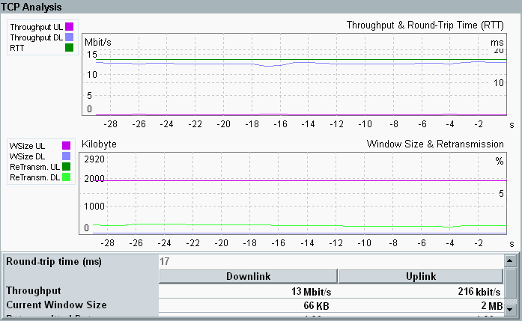

To display result diagrams for a connection, select the connection in column "Details" and press the hotkey "TCP Graphs".

The measurement results are grouped into two diagrams. One diagram shows the throughput and the round-trip time vs. time. The other diagram shows the window size and the retransmissions vs. time.
Use the hotkey "Trace & Scale" to hide selected traces and to scale the diagrams. By default, the X-axis shows the previous hour.
Remote command:Below the diagrams, a result table lists the current values of the measurement results that can be monitored via the diagrams.
Switches back to the default presentation, see "TCP Analysis Overview".